01스스로 헤엄치고 걷기
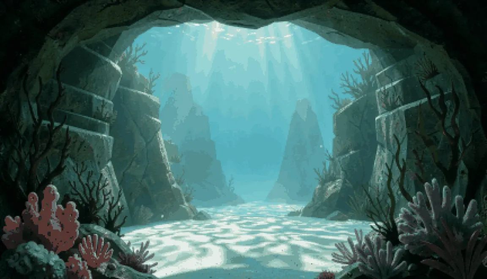
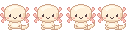
펫이 바탕화면 물속을 스스로 돌아다닙니다. 헤엄은 24프레임, 걷기는 4프레임 도트 애니메이션으로 표현했습니다.
./01 desktop tamagotchi
바탕화면 물속에 사는 우파루파 펫을 키우는 macOS · Windows 데스크톱 앱입니다. 먹이 주기, 놀이, 집·외형 꾸미기, 실시간 날씨 연동을 구현했습니다.

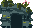
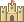
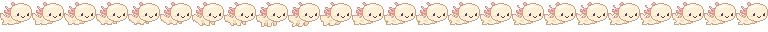
./features what it does
아래 그림은 모두 앱에 들어 있는 실제 도트 그림과 실행 화면입니다.


펫이 바탕화면 물속을 스스로 돌아다닙니다. 헤엄은 24프레임, 걷기는 4프레임 도트 애니메이션으로 표현했습니다.
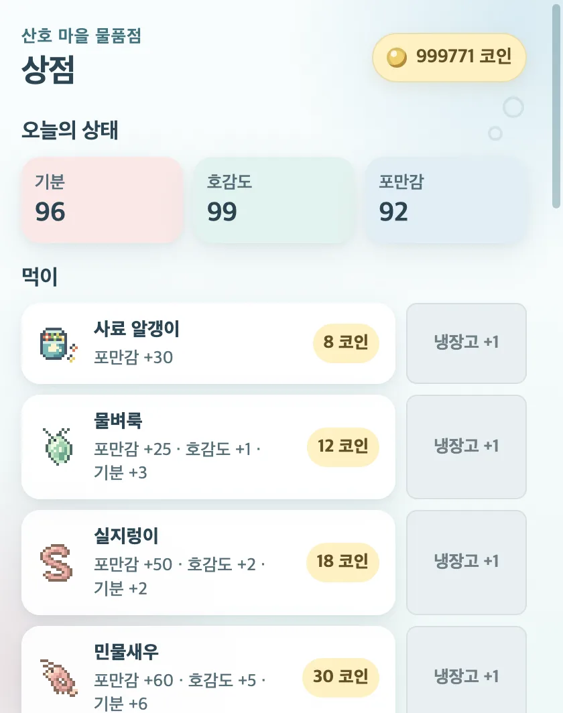
상점에서 사료, 물벼룩, 실지렁이, 민물새우 4종을 구입해 먹입니다. 먹이마다 포만감과 호감도가 다르게 오릅니다.
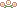
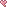
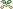
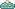
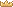
모자, 머리띠, 헤드폰 등 머리 장식 12종을 씌울 수 있습니다. 원하는 장식이 없으면 직접 도트로 그려서 추가할 수 있습니다.
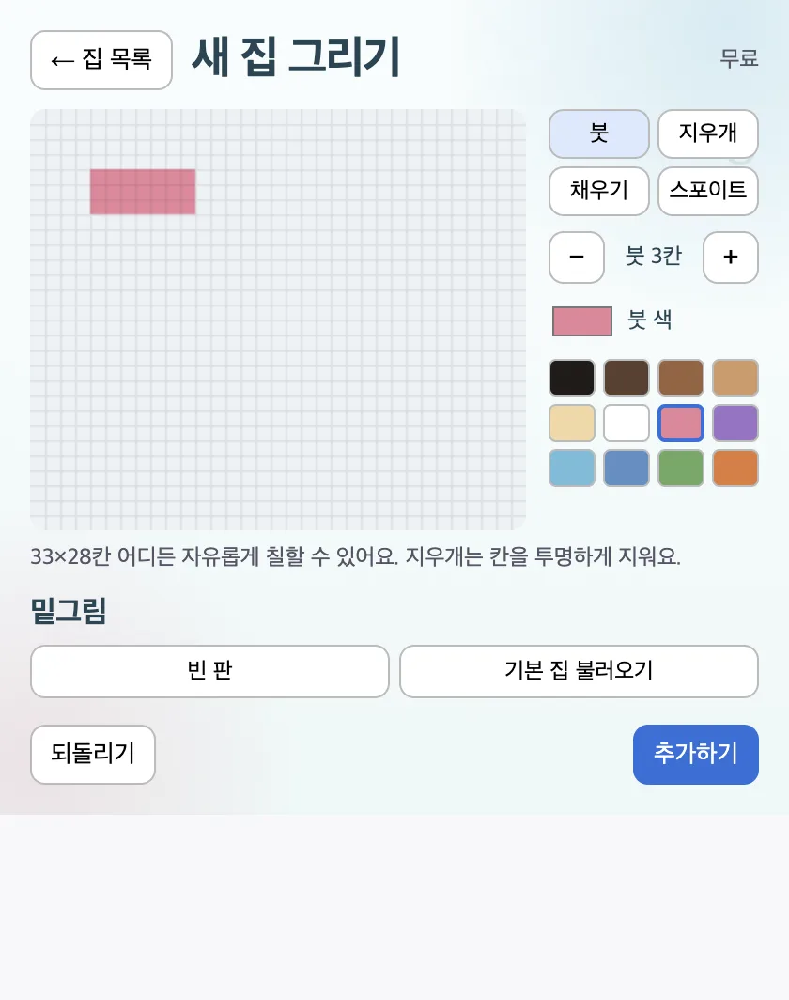
33×28칸 편집 화면에서 집을 직접 그려 바탕화면에 배치합니다. 그린 집은 목록에 저장해 두고 바꿔 쓸 수 있습니다.
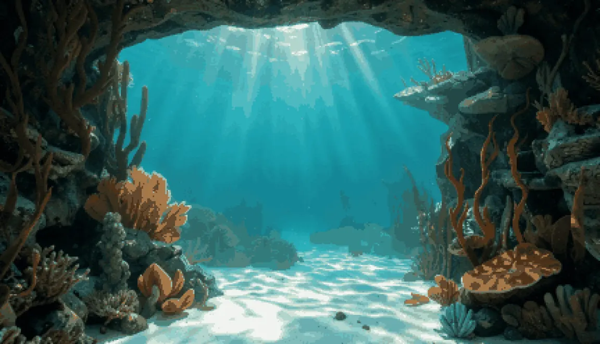
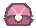
작은 성, 보물상자, 진주 조개 등 소품 8종을 코인으로 구입해 바닥에 배치하고, 끌어서 위치를 옮길 수 있습니다.
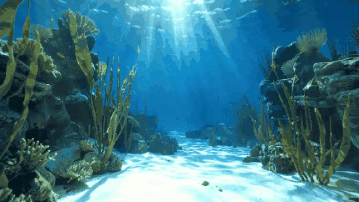
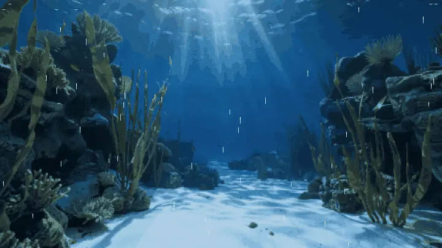
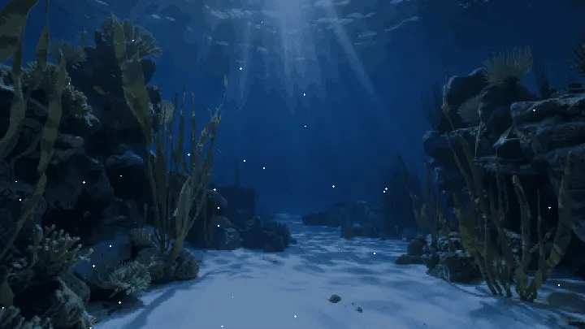
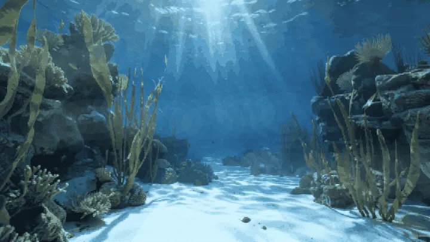
현재 위치의 날씨를 받아 와 바탕화면에 햇살, 비, 눈, 안개 효과를 표시합니다. 밤에는 화면이 어두워집니다.

펫에게 말을 걸면 오늘 날씨와 기온을 말풍선으로 알려 줍니다. 비가 오는 날에는 우산을 챙기라고 안내합니다.
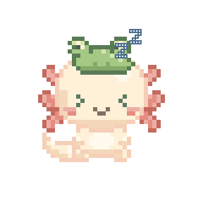
밤 10시부터 아침 7시 사이에 90초 동안 조작이 없으면 눈을 감고 잠듭니다.
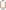
공을 던지면 물속에서 튕기고, 숨바꼭질을 하면 바위 뒤에 숨습니다. 가끔 크레용으로 바탕화면에 낙서를 하기도 합니다.
./info about
캐릭터 도트 그림부터 바탕화면에 고정되는 창까지 약 2주 동안 개발했습니다. 자동 검사 705개와 macOS 설치본 실행 확인을 거쳤고, 외부 배포(다운로드 제공)는 아직 하지 않았습니다.